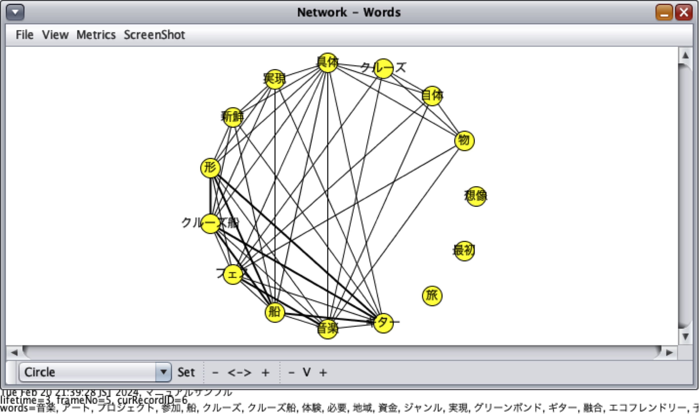
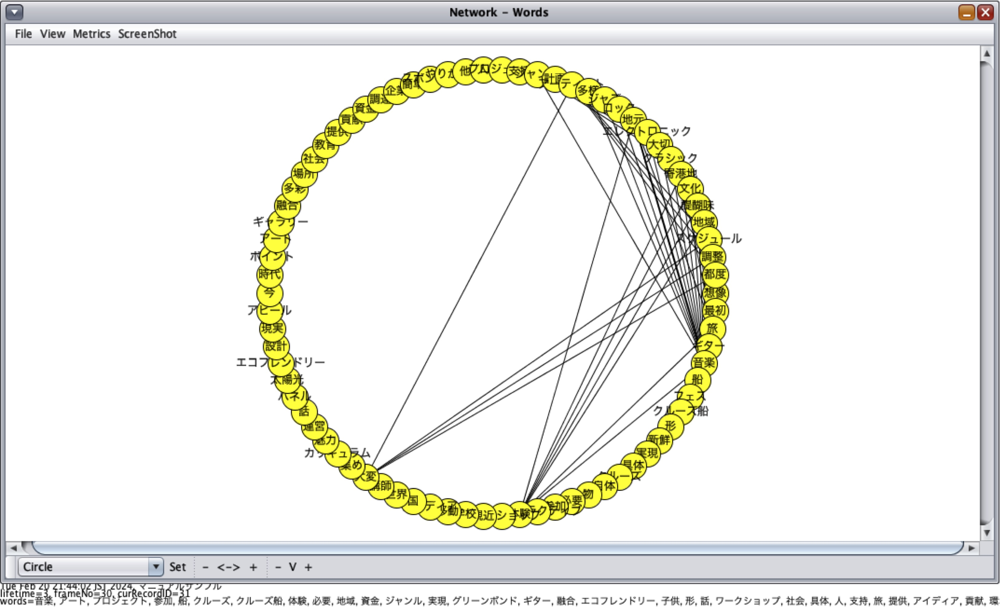

11.1. 時変ネットワーク分析 (Temporal Network Analysis)
時変ネットワーク分析とは，ネットワークにおけるノード間のエッジについて，時間的な特性を考慮するネットワーク分析の総称です．9. 累計モデルが過去の情報を全て加算的に計算していくアルゴリズムを採用するのと対照的に，時変ネットワーク分析では，ある一定期間のネットワーク構造の情報のみを利用します．ですので，一旦接続されたノード間のエッジにも有効期間（lifetime）を設定し，その期間を超えたものは一旦接続を解除する手続きをとります．これによって，対話が展開する中での話題の変遷を把握しやすくなります．長く話される話題と，散発的に現れる話題を周期的なグラフ表現で可視化することができます（Ohsaki & Oshima, 2019） ．
11.2. Lifetimeの設定による時変ネットワーク分析
対話の単位（Discourse Unit）LifeTimeを設定するためには，Propertyのタブを選択した上で（①），「Discourse Unit LifeTime」のボックスの中の「Enable Lifetime」ボックスにチェックを入れ，LifeTimeの長さを入力します（②）．この時に入力する数字が，単語を接続する単語の共起関係が見られた発話順番から何回分の発話順番までその接続を維持するのかを意味します．例えば，「1」を設定すると，単語の共起関係が見られた発話順番においてのみ，その接続が維持されますので，その次の発話順番で同じ単語間の共起関係が見られなければすぐに接続が解消されます．図11-1では，その設定を「3」としています．この場合，単語の共起関係が見られて，二つ先の発話順番まではその接続が維持されることを意味しています．

図11-1 PropertyのLifeTime設定画面
11.3. 次数中心性係数の総和の推移：累計モデル（Aggregative Model）と時変モデルの比較
前節で説明があった累計モデルのグループレベルでの次数中心性係数の総和の時間的推移と，時変モデルの時間的推移を比較してみましょう．時変モデルでも，次数中心性係数の総和の算出方法は，時変モデル同様です．図11-2をみるとわかるように，累計モデルによるグループレベルの次数中心性係数の総和の推移と比較して，時変モデル（lifetime = 3）の次数中心性係数の総和の推移は，上がり下がりが明確で，いくつかの突起が見受けられます．この山なりの部分で，選択された単語の共起関係が頻繁にみられていること，そして，それが発話順番にそって変化していることがわかります．

図11-2 累計モデルと時変モデルの次数中心性係数の総和の時間的推移
例えば，発話順番の4~7あたりの単語のネットワーク構造は，図11-3のようになります．ここでは，クルーズ船での音楽フェスのアイディアについて，話者がその価値について議論していることがわかります．さらに，別の山が見られる，発話順番の27~32のあたりの単語のネットワーク構造は，図11-4のようになります．ここでは話題は，音楽フェスというアイディアをさらに進めてそこで演奏される音楽のジャンルについての対話が展開しているようです．このように，時変モデルでは，対話の盛り上がりが発話順番のどのあたりで展開するのか，そして具体的に単語のネットワークに立ち戻ってどのように対話トピックが変化しているのかを解釈することができます．
{kind=link}
図11-3 発話順番4〜7あたりの単語のネットワーク構造
{kind=link}
図11-4 発話順番27~32あたりの単語のネットワーク構造
参考文献リスト
- Ohsaki, A., & Oshima, J. (2019, October). A socio-semantic network analysis of discourse using the network lifetime and the moving stanza window method. In International Conference on Quantitative Ethnography (pp. 326–333). Springer, Cham. https://doi.org/10.1007/978-3-030-33232-7_29